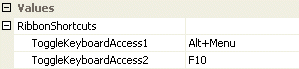

Ribbon KeyTips & Keyboard Access
KeyTips are a quick way to invoke ribbon functionality using only the keyboard. Use the ALT or F10 keys to enter KeyTips mode and you will notice that several elements of the ribbon are overlaid with small tool tip style windows. If you press the key indicated by any of the KeyTips then the matching element is invoked. For example, pressing the KeyTip for the application button will cause the button to be invoked and the associated context menu to be displayed. Pressing the KeyTip displayed over a tab will navigate into the tab and have the KeyTips for the groups inside the tab displayed. You can use the ESC key at any time to cancel the last action.
In order to enter keyboard access mode you first enter KeyTips mode by using the ALT or F10 keys. Then instead of pressing a KeyTip you use either the TAB key or one of the LEFT/RIGHT/UP/DOWN navigation keys. This causes a switch into keyboard access mode which removes the KeyTips from display and instead highlights the item that has the keyboard focus. Now use the TAB key or one of the LEFT/RIGHT/UP/DOWN navigation keys to move around the various elements that make up the ribbon. When on an element of interest such as a group button you can use the SPACE/ENTER/DOWN keys to invoke an appropriate action. Use the ESC key at any time to exit keyboard mode.
Keyboard Properties
You can see in Figure 1 the ribbon properties relating to keyboard access.

Figure 1 - Keyboard Properties.
ToggleKeyboardAccess1
ToggleKeyboardAccess2
You can modify the two keyboard combinations that switch into keyboard access modes by using these two properties. By default these values match those used by the Microsoft Office 2007 applications but you can modify these to match your application requirements if needed.